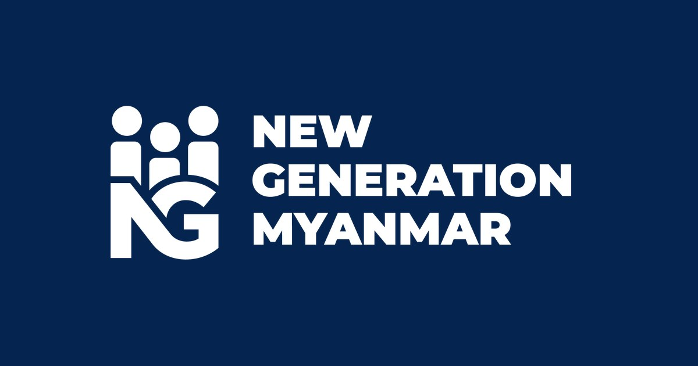

01 / Professional systems
New Generation Myanmar
Turning academic operations into dependable digital workflows.
I contribute across training-management and student-information platforms, translating domain rules into maintainable interfaces, services, permissions, and structured data flows.
- ContextReal users, operational constraints, and role-aware access
- ContributionFull-stack features from workflow definition to delivery
- FocusConsistency, maintainability, and clear business rules

Official homepage ↗